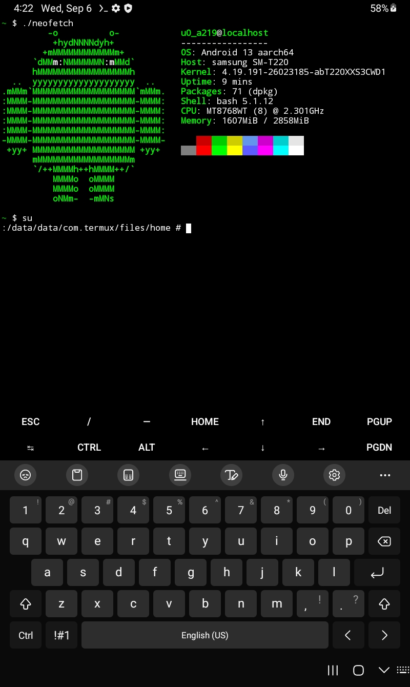

Samsung Galaxy Tab A7 Lite (samsung-gta7litewifi)
|
 A screenshot of a rooted Samsung Galaxy Tab A7 Lite running neofetch in termux. | |
| Manufacturer | Samsung |
|---|---|
| Name | Galaxy Tab A7 Lite |
| Codename | samsung-gta7litewifi |
| Released | 2021 |
| Category | testing |
| Original software | Android |
| Original version | 11 |
| Extended version | 13 |
| postmarketOS kernel | 4.19.191 |
| Hardware | |
| Chipset | MediaTek Helio P22T (MT8768) |
| CPU | ARM Cortex A53 MPCore |
| GPU | PowerVR GE8320 |
| Display | 800x1340 TFT LCD |
| Storage | 32GB or 64GB, depending on the specific model |
| Memory | 2GB, 3GB, or 4GB, depending on the specific model |
| Architecture | aarch64 |
| Type | tablet |
| Unixbench Whet/Dhry score | 0.0 |
{kind=link}
| USB Networking |
Works
|
|---|---|
| Flashing | |
| Touchscreen | |
| Display |
Broken
|
| WiFi | |
| FDE | |
| Mainline |
Broken
|
| Battery | |
| 3D Acceleration |
Broken
|
| Audio | |
| Bluetooth | |
| Camera | |
| GPS | |
| Mobile data |
Unavailable
|
| SMS |
Unavailable
|
| Calls |
Unavailable
|
| USB OTG | |
| NFC | |
| Accelerometer | |
|---|---|
| Magnetometer | |
| Ambient Light | |
| Proximity | |
| Hall Effect | |
| Barometer | |
| Power Sensor | |
| Camera Flash | |
|---|---|
| Keyboard |
Unavailable
|
| Touchpad |
Unavailable
|
| USB-A |
Unavailable
|
| HDMI/DP |
Unavailable
|
| Ir TX |
Unavailable
|
| Ir RX |
Unavailable
|
| Stylus |
Unavailable
|
| Haptics | |
| Ethernet |
Unavailable
|
| FOSS bootloader |
Broken
|
| WARNING: Make sure that you are prepared to lose functionality before installing postmarketOS. Samsung Knox will blow an efuse when the OS is modified that will permanently disable Knox-only features like Samsung Pay, and you will NEVER be able to use those features again. |
| While the kernel compiles and flashing is available, this device is in an extremely early state of development. Here Be Dragons |
Contributors
hexaheximal
Users owning this device
- Hexaheximal (Notes: maintaining the postmarketOS port, 3GB RAM 32GB eMMC model)
How to enter flash mode
Installation
You will need to run pmbootstrap to build the boot.img:
$ pmbootstrap init
$ pmbootstrap install
...and then you will need to flash it using mtkclient:
$ pmbootstrap export
$ mtk w boot /tmp/postmarketOS-export/boot.img
Reading logs
Before reading the logs, make sure to install mtkclient and then erase the expdb partition so the existing boot logs don't get mixed in and get confusing:
$ mtk e expdb
Once you have done that, boot the device. As soon as it powers off during a bootloop (and if it doesn't, hold down Power + Volume Down for ~10 seconds), run these commands:
$ mtk r expdb /tmp/expdb.bin
$ mtk reset # turns the device off, optional
$ cat /tmp/expdb.bin
Please note that the kernel part of the logs is quite a mess - it does not use proper newlines and instead uses what seems to be null bytes.
Downstream kernel status
The downstream kernel panics almost as soon as it boots into the kernel when compiled from source, but when using the prebuilt kernel & dtb it boots and USB Networking even works.
Mainline kernel status
The MT6765 close-to-mainline kernel does not boot due to the android bootloader refusing to boot with a dummy dtbo.